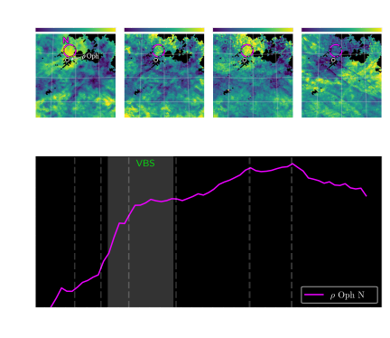

The extinction curve:
Beyond R(V)
Gregory M. Green, Max Planck Institute for Astronomy, Heidelberg
4th Astro Symposium, Toruń, 21 October 2025

Background
The dust extinction curve


The extinction curve and grain-size distribution
Is all variation explained by R(V)?
In the UV: No.
Peek & Schiminovich (2013) showed this using galaxy colors.
What about in the optical?
Data

(ESA/Euclid/Euclid Consortium/NASA, CC BY-SA 3.0 IGO)
Gaia BP/RP spectrophotometry
(“XP spectra”)

How to extract information from XP spectra?


Train model with 2.4 million stars ...


Learned stellar models of Gaia XP spectra
Learned extinction curve


R(V) results
R(V) in the Galactic plane

R(V) in the Galactic plane
R(V) in the Magellanic Clouds

Is there information in the extinction curve beyond R(V)?


“Empirical” extinction curves
Extinction-curve shapes

Decomposition: $ \displaystyle r_{ \hspace{-0.7em} \underset{\scriptstyle\color{cyan}\text{star}}{\underset{\color{cyan}\uparrow}{i}} } \hspace{-0.6em} \left(\lambda\right) = \sum_{ \hspace{-2.0em} \underset{\scriptstyle\color{cyan}\text{component}}{\underset{\color{cyan}\uparrow}{k}} \hspace{-2.0em} =1 }^{16} \hspace{-1.0em} \overset{\color{cyan}\text{coefficients}}{\overset{\color{cyan}\bigg\downarrow}{ b_{ik} }} \hspace{-0.7em} \overset{\color{cyan}\text{basis}}{\overset{\color{cyan}\downarrow}{ g_k\!\left(\lambda\right) }} $ .
Component decomposition of extinction curves


Checking for systematics: blue-red split
Map coefficients of blue vs. red sources.
The maps should be the same.


Individual extinction features

A new broad feature at ~850 nm
Confirmation of broad feature at ~770 nm
Maps of 770 & 850 nm features


R(V) does not explain all variations in the extinction curve
All of these features are of unknown origin.

...but they correlate with one another and R(V).
...and they correlate with diffuse interstellar bands (DIBs).
The extinction curve does not only change due to grain-size distribution. There are also chemical variations.